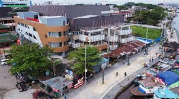
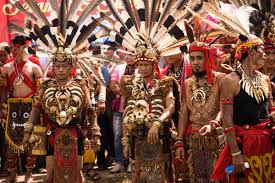

Wajib
⭐ Top 1
Wajib
⭐ Top 1
Fenomena Kulminasi Matahari
Saksikan momen magis saat matahari tepat di atas Tugu Khatulistiwa — bayangan benda menghilang total. Terjadi 2× setahun: 21-23 Maret dan 21-23 September. Gratis dan memukau.
 Sungai
Sungai
Susur Sungai Kapuas
Naik klotok (perahu kayu) menikmati sungai terpanjang Indonesia saat golden hour.
 Sejarah
Sejarah
Tur Keraton Kadriyah
Pelajari sejarah Kesultanan Pontianak, koleksi benda kerajaan, dan arsitektur Melayu-Islam abad ke-18.
 Alam Liar
Alam Liar
Ekspedisi Danau Sentarum
Taman nasional rawa air tawar terbesar di Asia — habitat orangutan, bekantan, dan ratusan spesies burung.
 Day Trip
Day Trip
Day Trip ke Singkawang
Kunjungi "Kota Seribu Kelenteng" — warisan budaya Tionghoa paling autentik di Kalimantan Barat.
 Hijau
Hijau
Wisata Mangrove Kubu Raya
Jelajahi hutan mangrove dengan perahu sambil mengamati bekantan dan burung khas Kalimantan.

BelanjaPasar Kapuas Indah
Pusat oleh-oleh khas Pontianak — kain tenun Dayak, kerajinan rotan, dan aneka produk lokal Kalimantan.

FestivalFestival Gawai Dayak
Hadiri pesta panen suku Dayak tiap Juni — tarian, musik sape, upacara adat, dan kuliner tradisional.